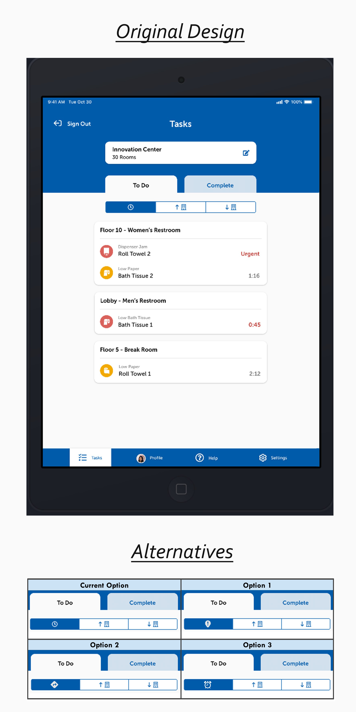
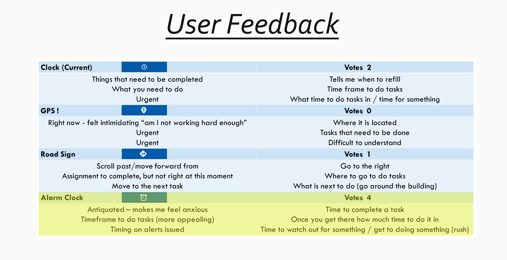
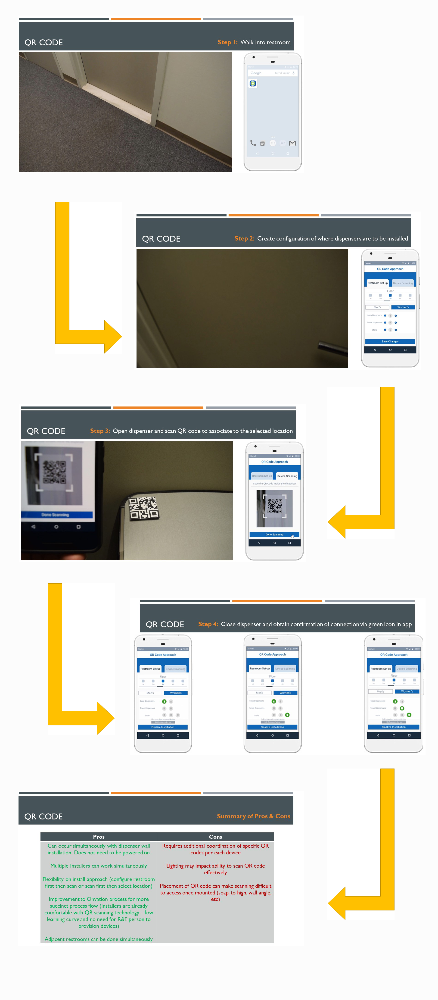

Case Study 04 · IoT & Mobile
A restroom management system for facility managers and custodial staff, deployed at the World Trade Center - my first UX role, where I designed a concept installer app myself and partnered with the lead designer on the core experience.
What Is Onvation
Onvation is a restroom management system that helps facility managers and custodial staff improve how efficiently they stock restrooms - ultimately giving building patrons a seamless experience.

Custodial staff testing the "in priority order" icon
Interviews with Custodial Staff Members
On the mobile app's landing page, users can sort building alerts by floor or by a priority order driven by product run-out rate. When this was presented to the business and marketing team, a disagreement broke out over whether the icon representing "priority order" was actually clear to end users.
The business team wanted to pause the project until they could find an external customer to interview. I proposed an alternative: our own office campus had a building fully equipped with Onvation, alongside others still running the old dashboard-and-text-message system. That let us resolve the icon question quickly - and hear directly from real end users what they saw as the biggest improvement over the old system.
The harder part was earning trust. Custodial staff were often afraid that admitting confusion with the system would get back to their supervisor and put their job at risk. Being approachable, using plain language, and guaranteeing confidentiality let me get past that - and it surfaced something unexpected: some staff worried the system would be used specifically to identify and fire low performers. That insight directly changed how the sales team talked about the product going forward, away from "manage your team's performance" messaging that read as a threat.

Creating User Journeys
For every new feature request, I mapped the real steps a user had to take, then looked for ways to simplify the path to the same outcome. The clearest example: designing a dedicated mobile app for the installers who set up Onvation's smart devices on-site.

Installer app concept, prototyped in MarvelApp
Before
A team member manually recorded every smart device's MAC ID and organized boxes for delivery. A foreman installed the physical dispensers. A separate team member then built out the building's floors/restrooms/dispensers in the web app. Finally, a team of engineers had to visit in person just to connect the devices.
After
A mobile app is more user-friendly for connecting smart devices than lugging around a laptop to place on bathroom surfaces. Simplifying the connection process and training foremen properly minimizes the number of trips to the customer site. Minimizing those trips directly reduces the business interruptions the customer incurs. Improving how device MAC IDs get recorded also frees up Kimberly-Clark team members' time for other tasks.
Sketches & Wireframes - Installer App
I wasn't given access to professional design software in this role, so I taught myself MarvelApp - a free prototyping tool - to design and prototype the installer app concept myself. Leadership at Kimberly-Clark preferred reviewing clickable, interactive prototypes over static sketches, so I built out low-fidelity flows they could actually click through.
The core decision I designed around: how should installers connect a new smart device to the system? I prototyped three distinct approaches for leadership to test hands-on - a QR code scan, a per-dispenser Bluetooth (BLE) connection, and a gateway-based connection - and watched them work through each one to see where real confusion, friction, or missing steps showed up.
Conducting User Testing - Phoenix, AZ
Ahead of on-site Beta testing at customer locations in Arizona, I conducted a training session to get our business and sales teams comfortable demoing the system. Once the business team identified Beta customers, I supported onboarding and stayed in ongoing contact with them to collect feedback - a process that surfaced an unforeseen feature idea that later went into the patent process.
Once Beta customers had used the system long enough, I assisted in building the user testing plan for interviewing both custodial staff and facility managers. I collaborated with the team in planning the sessions, observed and took notes throughout.
Feedback From the Team
Thanks so much for taking the lead and proactively organizing the enhancement list.
Sr. Strategy Analyst · Kimberly-Clark Onvation
Great work all around and a great story to tell.
Associate Director · Kimberly-Clark
Beyond the Product
I was selected to represent the Onvation booth at ISSA, an annual conference showcasing new products and innovations in the janitorial services industry. I shared the work directly with potential customers, watched them interact with the prototypes in real time, and helped bring on new customers by walking them through the system's benefits myself - my first experience showcasing designs to potential customers.
Outcome
The Onvation system was implemented at the World Trade Center - a genuinely high-profile, high-traffic environment for an early project. It was my introduction to design as a whole: the bridge from engineering to where I am today. That hybrid foundation - part design, part research, part self-directed technical learning - is still how I approach every project since.